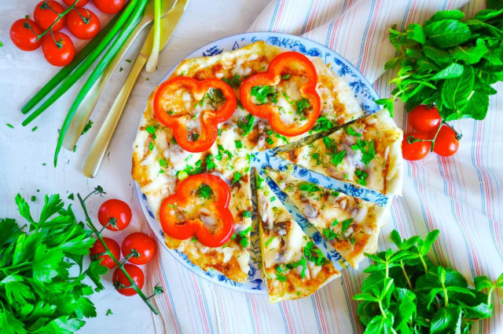
========================================================================
Картинки и советы в шагах будут скрыты, но при необходимости их можно раскрыть кнопкой.
Как сделать яичницу в лаваше на сковороде с сыром?
Вкусный завтрак приготовить совсем не сложно.
Для этого подготовьте необходимые ингредиенты по списку.
Начать лучше с подготовки начинки. Яйца берите крупные отборные.
Если яйца небольшие, можете взять 5-6 штук.
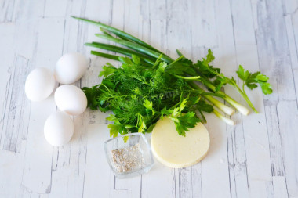
Сыр натрите на крупной терке.
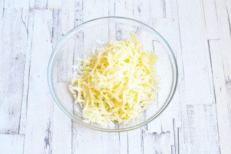
Зелень вымойте, обсушите и мелко порубите.
У меня это петрушка, немного укропа и парочка стеблей зеленого лука.
Также можете добавить свою любимую зелень: кинзу, шпинат, молодую черемшу и т. д..
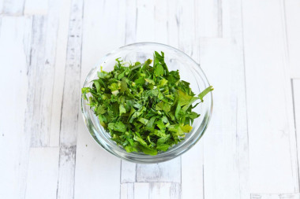
Теперь приготовьте основу из лаваша.
Лаваш лучше берите потолще и поплотнее, чтобы он не расползался от влажных яиц.
Также можете использовать пшеничный ролл. Из лаваша вырежьте 2 круга.
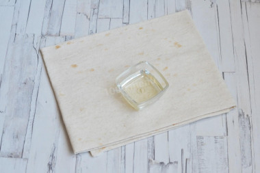
Первый должен быть равен диаметру сковороды, а второй чуть больше.
Лаваш нужно подготавливать в последнюю очередь,
потому что он очень быстро сохнет и трескается, особенно на краях.
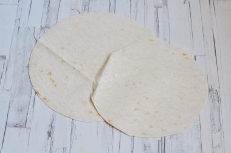
Смажьте дно и бока сковороды растительным маслом.
Выложите самый большой круглый лист лаваша, чтобы получились бортики.
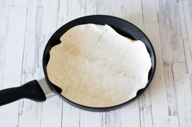
На лаваш аккуратно разбейте по очереди все яйца, стараясь сохранить желток целым.
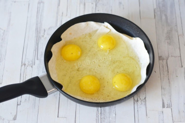
Яйца посолите и поперчите и присыпьте сверху большей частью тертого сыра.
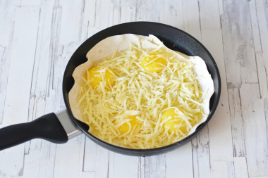
Сверху посыпьте яичницу большей частью измельченной зелени, оставив немного для украшения готового блюда.
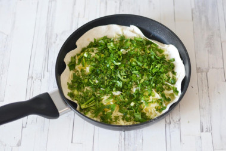
Сверху уложите второй лист лаваша, придавив его краями нижнего лаваша.
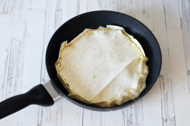
Поставьте сковороду на средний огонь и готовьте под крышкой примерно 5 минут.
Низ лаваша должен зарумяниться, яйца схватиться, а сыр расплавиться.
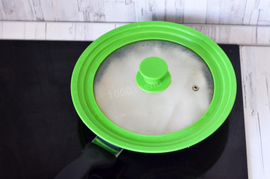
Аккуратно переверните лаваш на другую сторону. Присыпьте зарумянившийся верх оставшимся сыром.
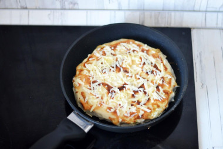
Снова накройте сковороду крышкой, выключите огонь и оставьте яичницу на 5 минут, чтобы сыр расплавился.
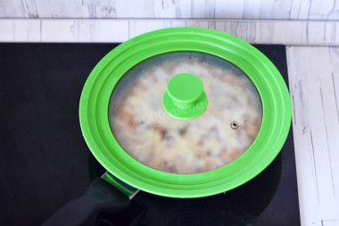
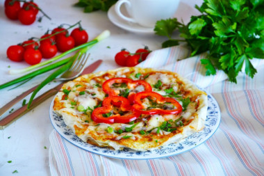
Готовую яичницу в лаваше переложите на тарелку,
Посыпьте измельченной зеленью и сразу подайте к столу, нарезав на кусочки.
Приятного аппетита!